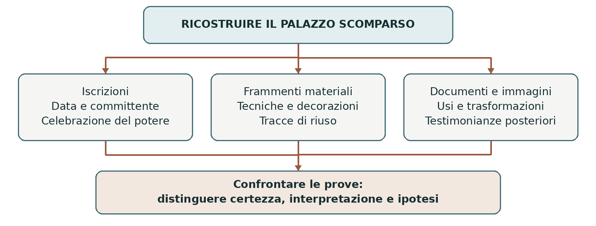

FOGGIA E LA CAPITANATA • IL DUECENTO E LA MEMORIA DELLA CITTÀ
Il palazzo di Federico II a Foggia
Un palazzo quasi scomparso può raccontare una parte importante della storia di una città. A Foggia i frammenti architettonici e l’iscrizione legati alla residenza di Federico II permettono di studiare il rapporto fra il sovrano, la Capitanata e la rappresentazione del potere. Richiedono però di distinguere ciò che è documentato da ciò che resta ipotetico.
0. Domanda generatrice
Come possiamo ricostruire il significato di un palazzo quando non possediamo più l’edificio nella sua interezza?
In sintesi Materiali, iscrizioni e documenti si completano a vicenda: nessuna singola fonte restituisce da sola il palazzo originario.
1. Il mondo precedente
Foggia esisteva prima di Federico II. Il suo sviluppo si collegava alle risorse agricole del Tavoliere, agli scambi e alle vie di comunicazione della Capitanata. La presenza del sovrano si inserì dunque nella storia di un centro già formato: non trasformò un luogo vuoto in una città.
Federico, re di Sicilia dal 1198 e imperatore dal 1220, governava territori differenti. Il Regno di Sicilia
comprendeva anche il Mezzogiorno continentale. La sua corte si spostava fra più sedi: per capire il ruolo di
Foggia bisogna pensare a una rete di residenze e centri di governo, non a una capitale unica e stabilmente
organizzata come quelle degli Stati contemporanei.
In sintesi L’importanza di Foggia nasce dall’incontro fra risorse del territorio, posizione della città e scelte della monarchia.
2. Le fratture
L’apparato epigrafico del palazzo ricorda l’avvio dell’impresa nel giugno 1223, per volontà di Federico. È
una testimonianza più precisa di una generica attribuzione tradizionale: collega il cantiere a una data, a un
committente e a un progetto di rappresentazione della sovranità.
L’iscrizione nomina anche Bartolomeo, qualificato come protomagister. Il titolo indica una responsabilità
nell’organizzazione dell’opera, ma non va tradotto automaticamente nella figura dell’architetto moderno,
unico autore del progetto. Dietro il nome ricordato sulla pietra lavoravano maestranze e figure che la fonte
non elenca.
In sintesi Il 1223 documenta una scelta politica e un cantiere; non prova che l’intero complesso fosse già terminato o rimasto poi immutato.
3. Attori, gruppi e conflitti
La residenza mette in relazione chi ordinava e finanziava l’opera, chi la realizzava e chi ne ha conservato la memoria.
| Attori | Obiettivi e interessi |
|---|---|
| Federico II | Utilizzava la residenza per la presenza della corte e per rendere visibile l’autorità regia e imperiale. |
| Bartolomeo e maestranze | Organizzavano e svolgevano il lavoro del cantiere; l’epigrafe ricorda il protomagister. |
| Corte e funzionari | Accompagnavano il sovrano e svolgevano attività politiche e amministrative. |
| Città e territorio | Fornivano risorse, servizi e collegamenti; la presenza regia rafforzava il rilievo di Foggia. |
| Studiosi e istituzioni culturali | Confrontano frammenti, iscrizioni e documenti per ricostruire e tutelare il patrimonio. |
In sintesi Il palazzo non era soltanto la casa di un individuo: faceva parte delle relazioni fra monarchia, corte e città.
4. Il processo storico
Una residenza nella rete del governo
Foggia ebbe un ruolo importante nella presenza di Federico in Capitanata. Il territorio offriva risorse e collegamenti utili a una corte itinerante. La caccia rientrava nelle pratiche del sovrano, ma non basta a spiegare la scelta della sede: contavano anche governo, economia e controllo dello spazio.
Le residenze accoglievano persone, incontri e attività che seguivano il sovrano. Perciò il termine “palazzo” non deve far immaginare soltanto appartamenti privati. La documentazione successiva alla morte di Federico parla di un edificio principale e di più costruzioni: il complesso poteva comprendere spazi con funzioni diverse.
La pietra come linguaggio politico
Gli elementi superstiti del portale, oggi reimpiegati nel muro di Palazzo Arpi, comprendono un arco con
decorazione vegetale e sostegni figurati con aquile, insieme all’apparato epigrafico. La loro disposizione
attuale non restituisce automaticamente quella originaria: osservare un frammento significa anche
studiarne spostamenti e riusi.
Le aquile richiamano il linguaggio della sovranità imperiale; la decorazione e la scrittura celebrativa danno prestigio all’opera. Il riferimento alla sede imperiale esalta il legame con Federico. Non dimostra però che Foggia fosse l’unico centro del suo potere, né consente di ricostruire il numero di sale o l’aspetto completo delle facciate.
Trasformazioni, rovine e ipotesi
Un documento del 1273, ormai in età angioina, attesta l’uso del complesso per nozze dinastiche; sono ricordati interventi nel 1281 e nel 1328. Nel Cinquecento il palazzo risultava già in rovina. Il terremoto del 1731, che trasformò profondamente Foggia, non può quindi essere indicato come l’unica causa della sua scomparsa.
Un disegno cinquecentesco e i documenti scritti aiutano la ricerca, ma sono posteriori al cantiere
federiciano. Ogni ricostruzione deve dichiarare quali parti siano certe e quali congetturali. Inoltre il palazzo
urbano va distinto dalle residenze extraurbane, come la domus Pantani: non possiamo trasferire dall’una
all’altro edifici, giardini o paesaggi.
In sintesi Il complesso ebbe una storia lunga: fondazione, usi successivi, trasformazioni e riusi dei frammenti.
Lo snodo decisivo
Il passaggio decisivo è dal monumento immaginato al monumento documentato: una ricostruzione suggestiva diventa conoscenza storica solo quando rende riconoscibili le prove e i loro limiti.
5. Le fonti in dialogo
L’iscrizione del 1223: costruire e celebrare
L’apparato epigrafico associato al portale è una fonte materiale e scritta. Ricorda il sovrano, l’avvio dell’opera e Bartolomeo; celebra inoltre la dignità della sede.
Contenuto — sintesi didattica: Il testo presenta Federico come Cesare e collega l’edificio alla sua volontà. L’espressione latina “sedes imperialis”, cioè sede imperiale, mostra che la costruzione doveva comunicare prestigio politico, oltre a svolgere funzioni pratiche.
Interpretazione e limiti: Un’iscrizione celebrativa mette in risalto il committente e seleziona ciò che vuole tramandare. Non è una pianta dell’edificio né un resoconto neutrale. Gli studiosi confrontano scrittura, materiali e formulazioni per discutere anche le diverse fasi dell’apparato epigrafico.
Domanda di lettura: Quali informazioni ricavi dall’iscrizione? Quali domande sull’aspetto e sull’uso del palazzo rimangono aperte?
Fonte e contesto: Ministero della Cultura, Palazzo di Federico II a Foggia
In sintesi La fonte documenta l’opera e, nello stesso tempo, il modo in cui il potere voleva essere ricordato.
6. Conseguenze e nuovo assetto
La presenza del palazzo rafforzò il legame fra la città e la monarchia federiciana. La residenza contribuiva a rendere visibile un’autorità che governava attraverso una pluralità di luoghi e persone. Foggia entrava così nella geografia politica di un regno più ampio.
La perdita dell’edificio ha trasformato i frammenti in luoghi di memoria. Il loro valore non diminuisce perché manca una ricostruzione completa: proprio il confronto fra ciò che resta e ciò che non sappiamo insegna a leggere il patrimonio con attenzione, evitando di scambiare una tradizione o un’immagine moderna per una prova.
In sintesi Il palazzo appartiene sia alla storia del potere medievale sia alla storia della memoria cittadina.
7. Conclusione
Possiamo ricostruire con sicurezza il legame della residenza con Federico, la data ricordata dall’epigrafe e alcuni elementi della sua storia. L’aspetto complessivo resta invece oggetto di ricerca. Questa distinzione rende il patrimonio di Foggia più comprensibile, senza inventare ciò che è andato perduto.
Sintesi finale Foggia era un centro già esistente e importante per il territorio. Federico inserì la città nella rete delle proprie sedi. L’epigrafe ricorda l’avvio dell’opera nel giugno 1223. Frammenti e documenti attestano una storia di usi, trasformazioni e perdite. La ricostruzione distingue dati certi, interpretazioni e ipotesi.
Per studiare e collegare
Coordinate essenziali
Spazio: Foggia, Capitanata, Regno di Sicilia. Tempo centrale: XIII secolo. Metodo: confronto fra epigrafia, resti architettonici e documenti successivi.
Saperi irrinunciabili
1. Foggia non fu fondata da Federico II.
2. Il Regno di Sicilia comprendeva anche il Mezzogiorno continentale.
3. La corte federiciana si spostava fra più sedi.
4. L’epigrafe ricorda l’avvio del palazzo nel giugno 1223.
5. Bartolomeo è nominato con il titolo di protomagister.
6. Il palazzo aveva funzioni pratiche e un valore politico e simbolico.
7. Gli elementi del portale sono conservati attraverso un successivo reimpiego.
8. Il complesso era già in rovina prima del terremoto del 1731.
9. Il palazzo urbano non va confuso con le residenze extraurbane.
10. Nessuna ricostruzione completa può essere presentata come certa senza prove.
Mappa concettuale

Le tre serie di fonti rispondono a domande diverse. Il loro confronto permette una ricostruzione critica.
Strumenti e attività
Linea del tempo ragionata
| Quando | Che cosa cambia |
|---|---|
| 1198 / 1220 | Federico diventa re di Sicilia e poi imperatore. |
| Giugno 1223 | Data di avvio dell’opera ricordata dall’epigrafe. |
| Età federiciana | Foggia è una sede importante della presenza regia. |
| 1273 | Il complesso ospita nozze dinastiche in età angioina. |
| 1281 / 1328 | Sono documentati interventi sul palazzo. |
| XVI secolo / 1731 | Rovine già nel Cinquecento; il terremoto modifica in seguito la città. |
Vocabolario essenziale
Epigrafe. Iscrizione realizzata su un supporto durevole, come la pietra.
Committente. Chi ordina e promuove la realizzazione di un’opera.
Corte itinerante. Corte che si sposta fra diverse sedi insieme al sovrano.
Reimpiego. Utilizzo di elementi di un edificio in una sistemazione successiva.
Attività di comprensione
1. Dividi in “documentato” e “ipotetico”: data del cantiere, numero originario delle sale, nome ricordato dall’epigrafe. Motiva.
2. Spiega perché sede imperiale non significa necessariamente capitale unica.
3. Prepara una scheda dei frammenti conservati: descrizione, messaggio politico, tre domande ancora aperte.
Fonti e approfondimenti
Approfondimento di storia per la classe terza. Fonti e studi per verificare e ampliare la lettura.
Ministero della Cultura • Palazzo di Federico II a Foggia
Treccani, Federiciana • Foggia
Treccani, Federiciana • Palatia
Francesco Gangemi • La testimonianza epigrafica (2014)